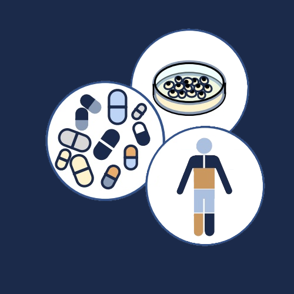

WELCOME TO VMA
Veritas Metabolic Advisory is a boutique scientific consulting firm exclusively focused in Metabolic Disease R&D, Search & Evaluation, Due-Diligence, Partnering, and Alliance Development.
Founded on the principle that the best decisions are grounded in deep domain expertise and intellectual honesty, VMA brings senior pharmaceutical R&D experience directly to clients who need decision-quality insight, not generalist advice.
We serve pharmaceutical and biotech companies seeking rigorous external innovation support, and academic institutions and technology transfer offices preparing to engage with industry. Whether the need is strategic, scientific, or transactional, Veritas operates as a trusted, confidential partner at every stage.